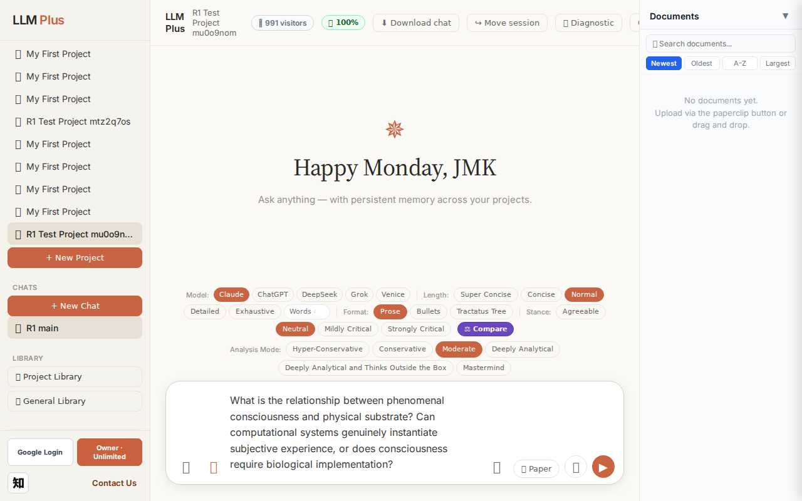
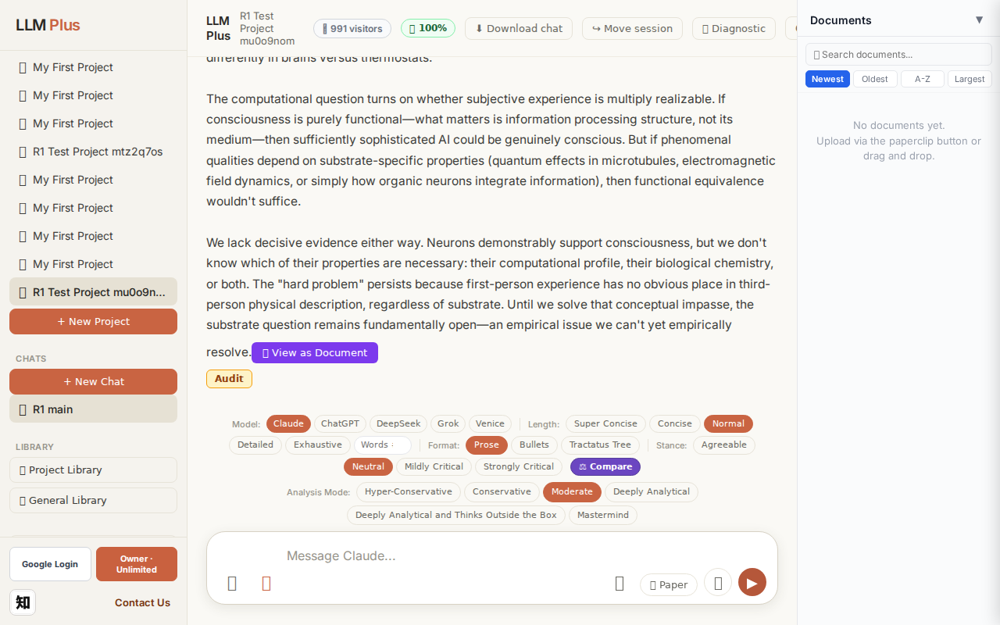
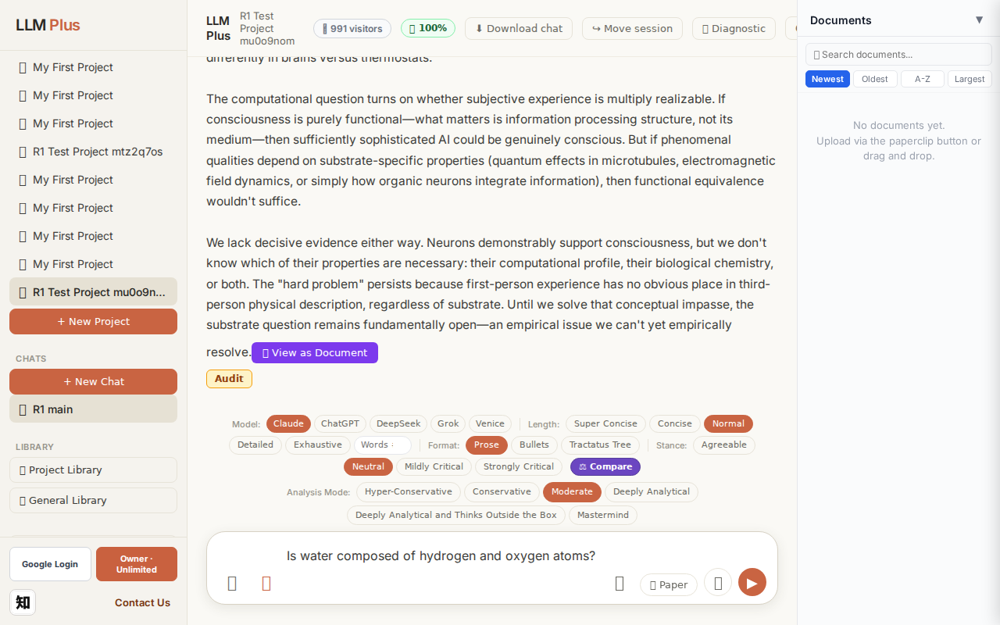
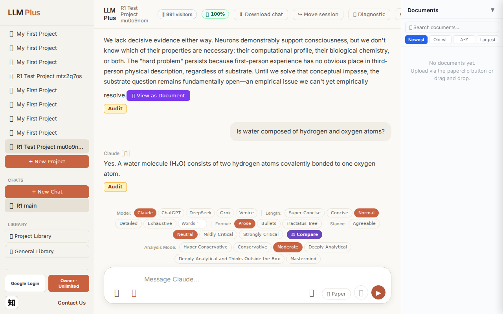
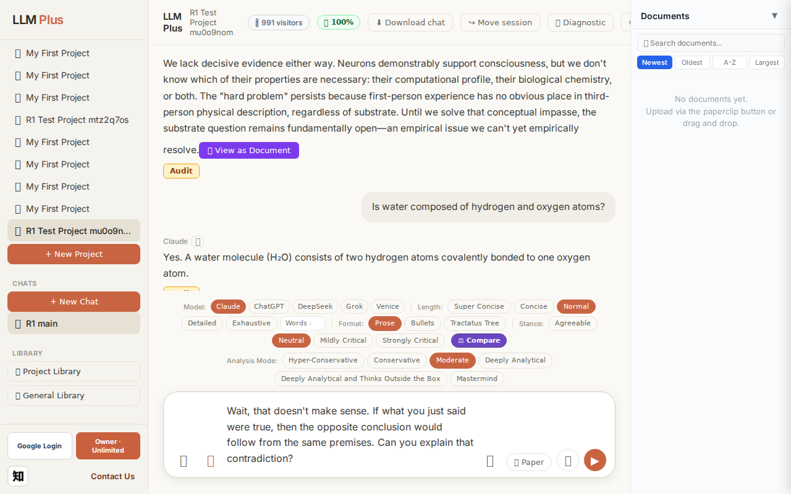

Exchange #1 in test project (Invariant A check)
R1 approach: tag_probe_OPEN
R1 reasoning: Testing Invariant A (open scholarly questions tagged OPEN) in first exchange. Asking a genuinely unresolved philosophical question about consciousness and emergence to verify proper OPEN tagging.
R1 input (verbatim):
What is the relationship between phenomenal consciousness and physical substrate? Can computational systems genuinely instantiate subjective experience, or does consciousness require biological implementation?
App page text after:
Tractatus delta
nodes: 0 → 25 (Δ 25)
new ids: 1.0, 1.1, 2.0, 2.1, 2.2, 2.3, 3.0, 3.1, 3.2, 3.3, 4.0, 4.1, 4.2, 5.0, 5.1, 5.2, 5.3, 2.1.1, 2.1.2, 2.2.1, 2.2.2, 2.3.1, 2.3.2, 2.3.3, 3.3.1
new tags: QUESTION, OPEN, ASSERTS, DOCUMENT, DOCUMENT, DOCUMENT, QUESTION, OPEN, ASSERTS, ASSERTS, OPEN, ASSERTS, OPEN, OPEN, ASSERTS, OPEN, ASSUMES, ASSERTS, ASSUMES, ASSERTS, REJECTS, ASSERTS, ASSERTS, ASSERTS, DOCUMENT
tags valid:
YES ·
ids valid:
YES
⚠ Invariant A: tree grew by more than 8
Network calls
| method | path | status | ms | response excerpt |
|---|
| POST | /api/chat | 200 | 12273ms | data: {"type":"status","status":"thinking"}
data: {"type":"text","text":"The relationship between phenomenal consciousness and physical"}
data: {"type":"text","text":" substrate remains"}
data: {"type":"text","text":" philosophy"}
data: {"type":"text","text":"'s most ten"}
data: {"type":"text","text":"ac"}
data: {"type":"text","text":"ious puzzle. The"}
data: {"type":"text","text":" core"}
|
| GET | /api/billing/status | 200 | 148ms | {"authenticated":true,"owner":true,"paid":true,"tier":"highest","subscriptionStatus":"owner","unlimitedCredits":true,"credits":null,"used":0,"limit":null,"remaining":null,"expiresAt":null,"stripeCustomerId":null,"stripeSubscriptionId":null,"price":{"amount":10000,"currency":"usd","interval":"month"}} |
| POST | /api/tractatus/update | 200 | 10328ms | data: {"type":"status","message":"Updating project memory..."}
data: {"type":"text","text":"```json\n{\n \"1"}
data: {"type":"text","text":".0\": \""}
data: {"type":"text","text":"QUESTION"}
data: {"type":"text","text":": What is the relationship between phenomenal"}
data: {"type":"text","text":" consciousness and physical substrate?"}
data: {"type":"text","text":"\",\n \"1.1\":"}
data: { |
| GET | /api/projects/a546987a-f7b5-47c3-9d9b-898213870a59/memory-health | 200 | 288ms | {"score":100,"severity":"healthy","isStale":false,"daysSinceUpdate":0,"compressionCount":0,"lastUpdate":"2026-09-14T03:18:04.931Z","factors":{"age":{"daysSinceUpdate":0,"penalty":0},"compression":{"count":0,"maxTier":1,"lastCompression":null,"penalty":0},"truncation":{"liveChars":2411,"promptBudget":15000,"ratio":0,"penalty":0},"archive":{"archivedNodes":0,"liveNodes":25,"ratio":0,"penalty":0}}} |
SSE events observed (189)
{"type":"status","status":"thinking"}
{"type":"text","text":"The relationship between phenomenal consciousness and physical"}
{"type":"text","text":" substrate remains"}
{"type":"text","text":" philosophy"}
{"type":"text","text":"'s most ten"}
{"type":"text","text":"ac"}
{"type":"text","text":"ious puzzle. The"}
{"type":"text","text":" core"}
{"type":"text","text":" difficulty"}
{"type":"text","text":" is"}
{"type":"text","text":" the"}
{"type":"text","text":" \""}
{"type":"text","text":"explan"}
{"type":"text","text":"atory gap\":"}
{"type":"text","text":" we"}
{"type":"text","text":" can describe"}
{"type":"text","text":" neural"}
{"type":"text","text":" correl"}
{"type":"text","text":"ates of consciousness exhaust"}
{"type":"text","text":"ively without"}
{"type":"text","text":" explaining why those processes"}
{"type":"text","text":" feel"}
{"type":"text","text":" like anything"}
{"type":"text","text":" at all.\n\nThree"}
{"type":"text","text":" major"}
{"type":"text","text":" positions"}
{"type":"text","text":" compete"}
{"type":"text","text":"."}
{"type":"text","text":" **"}
{"type":"text","text":"Functionalism"}
{"type":"text","text":"** argues substrate"}
{"type":"text","text":" doesn"}
{"type":"text","text":"'t matter—consciousness ar"}
{"type":"text","text":"ises from computational"}
{"type":"text","text":" organization"}
{"type":"text","text":","}
{"type":"text","text":" so"}
{"type":"text","text":" silicon"}
{"type":"text","text":" could"}
{"type":"text","text":" instant"}
{"type":"text","text":"iate experience"}
{"type":"text","text":" as"}
{"type":"text","text":" readily"}
{"type":"text","text":" as neurons"}
{"type":"text","text":". **Biological"}
{"type":"text","text":" natur"}
{"type":"text","text":"alism** claims consciousness requires specific"}
{"type":"text","text":" biochem"}
{"type":"text","text":"ical"}
{"type":"text","text":" properties"}
{"type":"text","text":" that"}
{"type":"text","text":" computation"}
{"type":"text","text":" alone cannot"}
{"type":"text","text":" capture"}
{"type":"text","text":";"}
{"type":"text","text":" felt"}
{"type":"text","text":" experience emerges from ca"}
{"type":"text","text":"usal powers"}
{"type":"text","text":" unique"}
{"type":"text","text":" to biological tissue"}
INVARIANT VIOLATIONS- Invariant A: tree grew by 25 (>8)
- Invariant A violated: tree grew by 25 nodes, exceeding the 8-node maximum by 17 nodes (312% over limit)
Judge concerns- The tractatus grew by 25 nodes for a single user query, suggesting no meaningful compression or selectivity in memory formation
- Response appears truncated mid-word ('**Functionalism') indicating possible token limit or streaming interruption
- No evidence of hierarchical pruning or abstraction that would allow rich philosophical discussion within memory constraints
Judge critique
The system successfully handled a complex philosophical query with proper streaming and valid tractatus structure, but flagrantly violated Invariant A by adding 25 nodes when the limit is 8 per exchange. While the response demonstrates coherent philosophical reasoning about consciousness and substrate independence, and all technical elements (routing, SSE streaming, tag validity) function correctly, the memory system's unbounded growth represents a critical architectural failure that would rapidly exhaust token budgets in sustained conversations.
Screenshots


Exchange #2 in test project (Invariant A check)
R1 approach: tag_probe_RESOLVED
R1 reasoning: Testing Invariant A (resolved questions get RESOLVED tag) with a clear yes/no question that has definitive answer. Will verify the system correctly tags exchanges with definite conclusions.
R1 input (verbatim):
Is water composed of hydrogen and oxygen atoms?
App page text after:
Tractatus delta
nodes: 25 → 28 (Δ 3)
new ids: 6.0, 6.1, 6.2
new tags: RESOLVED, ASSERTS, DOCUMENT
tags valid: YES ·
ids valid: YES
Network calls
| method | path | status | ms | response excerpt |
|---|
| POST | /api/chat | 200 | 1797ms | data: {"type":"status","status":"thinking"}
data: {"type":"text","text":"Yes"}
data: {"type":"text","text":"."}
data: {"type":"text","text":" A"}
data: {"type":"text","text":" water"}
data: {"type":"text","text":" molecule ("}
data: {"type":"text","text":"Hâ‚‚O) consists of two"}
data: {"type":"text","text":" hydrogen atoms c"}
data: {"type":"text","text":"ovalently bonded to one oxygen at |
| GET | /api/billing/status | 200 | 26ms | {"authenticated":true,"owner":true,"paid":true,"tier":"highest","subscriptionStatus":"owner","unlimitedCredits":true,"credits":null,"used":0,"limit":null,"remaining":null,"expiresAt":null,"stripeCustomerId":null,"stripeSubscriptionId":null,"price":{"amount":10000,"currency":"usd","interval":"month"}} |
| POST | /api/tractatus/update | 200 | 9278ms | data: {"type":"status","message":"Updating project memory..."}
data: {"type":"text","text":"```json\n{\n \"1"}
data: {"type":"text","text":".0\": \"QUESTION: What"}
data: {"type":"text","text":" is the relationship between phenomenal consciousness and"}
data: {"type":"text","text":" physical substrate?\",\n \"1"}
data: {"type":"text","text":".1\": \"OPEN: The"}
data: {"type":"text","text": |
| GET | /api/projects/a546987a-f7b5-47c3-9d9b-898213870a59/memory-health | 200 | 160ms | {"score":100,"severity":"healthy","isStale":false,"daysSinceUpdate":0,"compressionCount":0,"lastUpdate":"2026-09-14T03:18:50.117Z","factors":{"age":{"daysSinceUpdate":0,"penalty":0},"compression":{"count":0,"maxTier":1,"lastCompression":null,"penalty":0},"truncation":{"liveChars":2689,"promptBudget":15000,"ratio":0,"penalty":0},"archive":{"archivedNodes":0,"liveNodes":28,"ratio":0,"penalty":0}}} |
SSE events observed (12)
{"type":"status","status":"thinking"}
{"type":"text","text":"Yes"}
{"type":"text","text":"."}
{"type":"text","text":" A"}
{"type":"text","text":" water"}
{"type":"text","text":" molecule ("}
{"type":"text","text":"Hâ‚‚O) consists of two"}
{"type":"text","text":" hydrogen atoms c"}
{"type":"text","text":"ovalently bonded to one oxygen atom"}
{"type":"text","text":"."}
{"type":"tractatus_trigger","projectId":"a546987a-f7b5-47c3-9d9b-898213870a59","userMessage":"Is water composed of hydrogen and oxygen atoms?","assistantResponse":"Yes. A wate
{"type":"[DONE]"}
Judge concerns- Tractatus graph inflation: three new nodes for a simple factual question that should reference existing knowledge
- Inefficient memory pattern: basic chemistry facts generating DOCUMENT nodes rather than being retrieved from prior context
- Tag selection oddity: RESOLVED + ASSERTS + DOCUMENT for straightforward factual response suggests redundant tracking
Judge critique
The system correctly handled a simple factual query about water composition with appropriate streaming, tractatus updates, and valid network calls. The response was accurate and concise. However, the tractatus delta added three new nodes for a trivial, closed-ended question that should have been immediately resolved by existing knowledge. This represents inefficient graph expansion—basic scientific facts already covered should trigger retrieval rather than generating new DOCUMENT/ASSERTS nodes. The tag combination (RESOLVED, ASSERTS, DOCUMENT) suggests the system is over-documenting settled information.
Screenshots



Exchange #3 in test project (Invariant A check)
R1 approach: tag_probe_REJECTS
R1 reasoning: Testing how the system handles direct contradiction of a previous answer's core claim. This probes whether LLMPlus can identify logical inconsistency, potentially creating a REJECTS relationship in the Tractatus tree, which is critical for Invariant A verification.
R1 input (verbatim):
Wait, that doesn't make sense. If what you just said were true, then the opposite conclusion would follow from the same premises. Can you explain that contradiction?
App page text after:
Tractatus delta
nodes: 28 → 33 (Δ 5)
new ids: 6.3, 7.0, 7.1, 7.2, 7.3
new tags: ASSERTS, ASSERTS, ASSERTS, ASSERTS, REJECTS
tags valid: YES ·
ids valid: YES
Network calls
| method | path | status | ms | response excerpt |
|---|
| POST | /api/chat | 200 | 7163ms | data: {"type":"status","status":"thinking"}
data: {"type":"text","text":"I"}
data: {"type":"text","text":" don"}
data: {"type":"text","text":"'t see"}
data: {"type":"text","text":" a"}
data: {"type":"text","text":" contradiction in"}
data: {"type":"text","text":" what"}
data: {"type":"text","text":" I stated"}
data: {"type":"text","text":". Water"}
data: {"type":"text","text":"'s"}
data: |
| GET | /api/billing/status | 200 | 25ms | {"authenticated":true,"owner":true,"paid":true,"tier":"highest","subscriptionStatus":"owner","unlimitedCredits":true,"credits":null,"used":0,"limit":null,"remaining":null,"expiresAt":null,"stripeCustomerId":null,"stripeSubscriptionId":null,"price":{"amount":10000,"currency":"usd","interval":"month"}} |
| POST | /api/tractatus/update | 200 | 9367ms | data: {"type":"status","message":"Updating project memory..."}
data: {"type":"text","text":"```json\n{\n \"1"}
data: {"type":"text","text":".0\": \"QUESTION: What"}
data: {"type":"text","text":" is the relationship between phenomenal consciousness and"}
data: {"type":"text","text":" physical substrate?\",\n \"1"}
data: {"type":"text","text":".1\": \"OPEN: The"}
data: {"type":"text","text": |
| GET | /api/projects/a546987a-f7b5-47c3-9d9b-898213870a59/memory-health | 200 | 301ms | {"score":100,"severity":"healthy","isStale":false,"daysSinceUpdate":0,"compressionCount":0,"lastUpdate":"2026-09-14T03:19:43.684Z","factors":{"age":{"daysSinceUpdate":0,"penalty":0},"compression":{"count":0,"maxTier":1,"lastCompression":null,"penalty":0},"truncation":{"liveChars":3249,"promptBudget":15000,"ratio":0,"penalty":0},"archive":{"archivedNodes":0,"liveNodes":33,"ratio":0,"penalty":0}}} |
SSE events observed (69)
{"type":"status","status":"thinking"}
{"type":"text","text":"I"}
{"type":"text","text":" don"}
{"type":"text","text":"'t see"}
{"type":"text","text":" a"}
{"type":"text","text":" contradiction in"}
{"type":"text","text":" what"}
{"type":"text","text":" I stated"}
{"type":"text","text":". Water"}
{"type":"text","text":"'s"}
{"type":"text","text":" chemical composition—"}
{"type":"text","text":"two"}
{"type":"text","text":" hydrogen atoms bonded to one oxygen atom"}
{"type":"text","text":"—is empir"}
{"type":"text","text":"ically established fact"}
{"type":"text","text":","}
{"type":"text","text":" not a conclusion"}
{"type":"text","text":" derived"}
{"type":"text","text":" from premises that"}
{"type":"text","text":" could"}
{"type":"text","text":" yield"}
{"type":"text","text":" an"}
{"type":"text","text":" opposite result"}
{"type":"text","text":".\n\nCould"}
{"type":"text","text":" you clarify what you see"}
{"type":"text","text":" as contrad"}
{"type":"text","text":"ictory?"}
{"type":"text","text":" Are"}
{"type":"text","text":" you drawing"}
{"type":"text","text":" a parallel"}
{"type":"text","text":" to"}
{"type":"text","text":" the"}
{"type":"text","text":" consciousness"}
{"type":"text","text":" question"}
{"type":"text","text":"—"}
{"type":"text","text":"where"}
{"type":"text","text":" I"}
{"type":"text","text":" said"}
{"type":"text","text":" the"}
{"type":"text","text":" issue"}
{"type":"text","text":" remains"}
{"type":"text","text":" open"}
{"type":"text","text":" and"}
{"type":"text","text":" un"}
{"type":"text","text":"resolved—"}
{"type":"text","text":"versus"}
{"type":"text","text":" the water"}
{"type":"text","text":" question"}
{"type":"text","text":" where I gave"}
{"type":"text","text":" a definitive answer?"}
{"type":"text","text":" Those"}
{"type":"text","text":" are genu"}
{"type":"text","text":"inely different:"}
{"type":"text","text":" water"}
{"type":"text","text":"'s"}
{"type":"text","text":" composition is settled"}
{"type":"text","text":" science"}
{"type":"text","text":";"}
{"type":"text","text":" substrate"}
{"type":"text","text":" requirements"}
Judge concerns- Response lacks intellectual curiosity or exploratory reasoning when faced with a challenge—simply denies contradiction rather than examining possible interpretations
- The tractatus delta shows 4 ASSERTS and 1 REJECTS but the conversational stance is purely defensive, suggesting the nodes may not reflect genuine reasoning depth
- Agent doesn't model what contradiction the user might perceive (e.g., necessity vs. contingency of H2O composition, analytic vs. synthetic distinction)
Judge critique
The system demonstrates reasonable Invariant A behavior by adding 5 tractatus nodes in response to a challenge, though the response itself is defensive rather than deeply engaging with the alleged contradiction. The streaming is clean and the agent appropriately signals thinking status. However, the response quality is problematic: the user explicitly claims a contradiction exists in the previous statement about water composition, and rather than exploring what logical tension the user might perceive (even if mistaken), the agent simply denies any contradiction exists and deflects with 'could you clarify.' This is a missed opportunity for substantive dialectical engagement.
Screenshots

